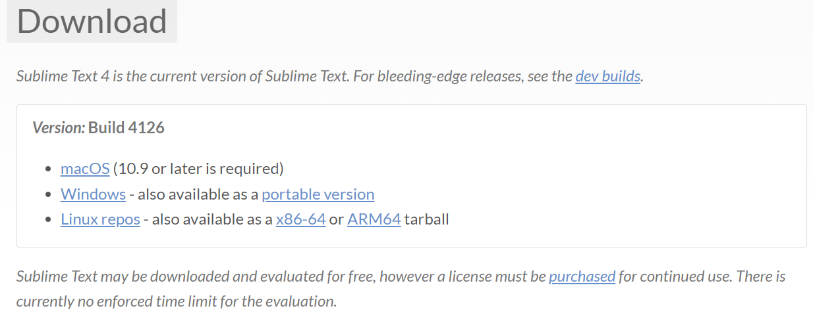

Sublime是什么？
Sublime Text 是一款流行的代码编辑器软件，也是HTML和散文先进的文本编辑器，可运行在Linux，Windows和Mac OS X。也是许多程序员喜欢使用的一款文本编辑器软件。
sublime英文官网
sublime中文官网
快捷键
- 打开/关闭左侧目录
1
ctrl+k, ctrl+b
- 展开/折叠代码
1
ctrl+k+0, ctrl+k+1, ctrl+k+2
- json 格式化/反格式化
1
2<!-- 自定义快捷键 -->
ctrl+alt+j, ctrl+alt+m - 打开/关闭终端
1
ctrl+fn+t
安装
根据官方地址下载安装

基础配置
安装 Package Control 插件包管理器
- 旧版本安装
- 快捷键打开控制台
1
ctrl + `
- 输入代码
1
import urllib.request,os,hashlib; h = '6f4c264a24d933ce70df5dedcf1dcaee' + 'ebe013ee18cced0ef93d5f746d80ef60'; pf = 'Package Control.sublime-package'; ipp = sublime.installed_packages_path(); urllib.request.install_opener( urllib.request.build_opener( urllib.request.ProxyHandler()) ); by = urllib.request.urlopen( 'http://packagecontrol.io/' + pf.replace(' ', '%20')).read(); dh = hashlib.sha256(by).hexdigest(); print('Error validating download (got %s instead of %s), please try manual install' % (dh, h)) if dh != h else open(os.path.join( ipp, pf), 'wb' ).write(by)
- 快捷键打开控制台
- 新版本安装
- 快捷键打开查找栏
1
ctrl + shift + p
- 输入如下回车安装
1
Install Package Control
- 快捷键打开查找栏
- 旧版本安装
其他常规配置
- 打开侧边栏
1
View -> Side Bar -> Show SideBar (Ctrl+K, Ctrl+B)
- 打开上边栏
1
(Ctrl + Shift + P) -> view -> Toogle Tabs
- 设置主题、字体大小及tab等
1
2
3
4
5
6
7Preferences -> Settings -> User
"font_size": 21,
"tab_size": 4,
"translate_tabs_to_spaces": true,
"theme": "Monokai Classic.sublime-theme",
"color_scheme": "Monokai Classic.sublime-color-scheme",
- 打开侧边栏
插件安装
插件安装步骤
- 所有插件安装都是通过插件包管理器
- ctrl + shift + P
- Install Package
- 输入对应插件名称
terminal 终端
- 打开包管理器输入
1
terminus -> Terminus:Toggle Panel
- 配置快捷键
1
2Preference -> Key Bindings -> User
{"keys": ["ctrl+fn+t"], "command": "toggle_terminus_panel"},
json 格式化
- 打开包管理器输入
1
pretty_json
- 配置快捷键
1
2
3Preference -> Key Bindings -> User
{ "keys": ["ctrl+alt+m"], "command": "un_pretty_json" },
{ "keys": ["ctrl+alt+j"], "command": "pretty_json" },